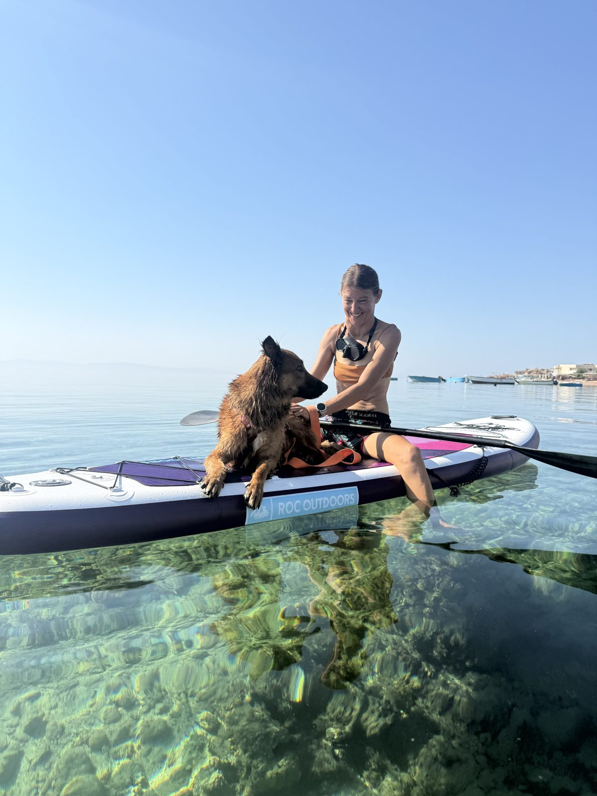

Mam na imię Ania. Jestem instruktorką freedivingu SSI i mieszkam w Dahab, nad Morzem Czerwonym.
Prowadzę kursy dla osób, które dopiero zaczynają, oraz treningi dla certyfikowanych freediverów. W swojej pracy łączę technikę i bezpieczeństwo z tym, co wyniosłam z jogi i medytacji: uważnością, spokojnym oddechem i lepszym kontaktem z własnym ciałem.
Pracuję w małych grupach, bo chcę mieć czas dla każdej osoby. Zależy mi, żebyś czuła się bezpiecznie, mogła zadawać pytania i uczyć się we własnym tempie — bez porównywania się z innymi.
Dla mnie freediving to nie tylko metry i rekordy. To także umiejętność rozluźnienia się, zaufania sobie i poruszania w wodzie z większą swobodą. Nie musisz niczego udowadniać — ważne, żeby robić postępy, które mają sens właśnie dla Ciebie.
Doświadczenie i kwalifikacje
- — Instruktorka freedivingu SSI Performance
- — Instruktorka jogi
- — Praktyka medytacji
- — Prowadzę zajęcia po polsku i angielsku
- — PBs FIM: 63m, CWTB: 56m, CNF: 40m
Obserwuj mnie lub napisz
Jeśli chcesz dowiedzieć się więcej albo porozmawiać o kursie, napisz do mnie. Możesz też zajrzeć na mój Instagram lub Facebook.